The Editor: details¶
Info
This page holds every rule, limit and message of this feature. For the short guide, see The Editor.
In the editor, you draw and change a diagram. To open it, see Opening a draft. For tasks such as adding and connecting devices, see Building a Diagram. Checks and Preflight and Command Palette and Shortcuts have their own pages. The examples use the Riverside Water draft of the example lab.
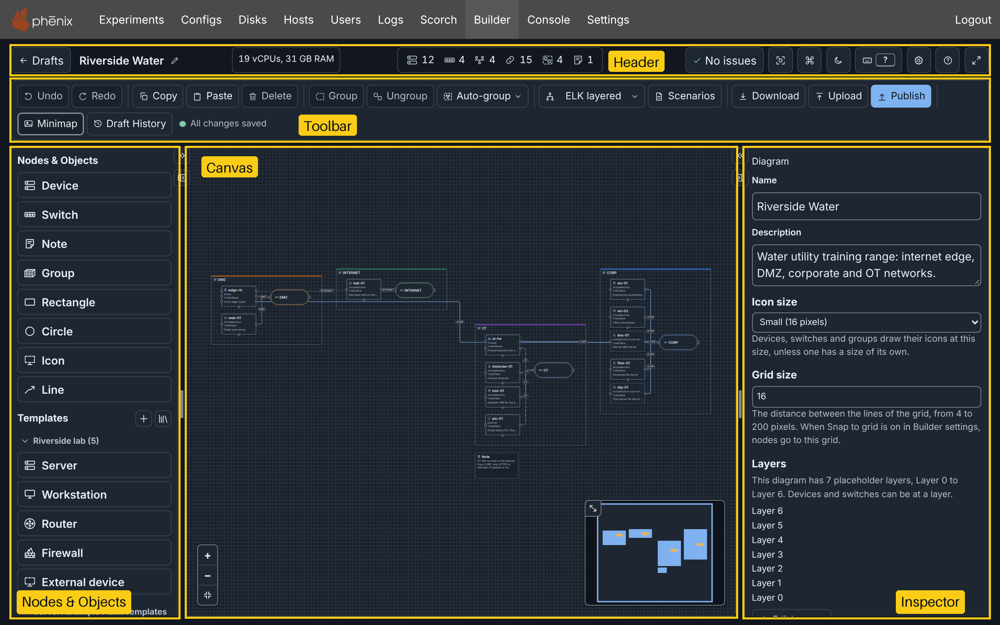
The editor has five areas:
- The header: the diagram name, the counts, the checks and the view buttons.
- The toolbar: the editing, layout, download and publish buttons, and the save state.
- Nodes & Templates, the left column, with Nodes & Objects.
- The canvas.
- The Inspector, which changes the selection.
Header¶
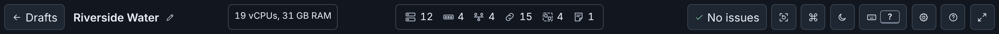
From left to right, the header holds:
- Drafts: opens the drafts page. Your changes continue to save.
- The diagram name. Point at a long name to see all of it.
- Edit diagram name (the pencil), except in a published diagram (see Renaming the diagram).
- The resource totals.
- The counts of devices, switches, networks, connections, groups and notes, and of layers while a device or a switch is at a layer (see Selecting by kind).
- The checks button, which opens Diagram checks (see Checks and warnings).
- Reset view (see Canvas).
- Commands: opens the command palette.
- The theme button (see Themes).
- Shortcuts: opens the keyboard shortcuts sheet. The button shows the key that opens the sheet, if there is one.
- Settings: opens Builder settings.
- Help: opens this documentation in a new tab.
- Focus mode: full-screen mode for focused editing (see Focus mode).
In a narrow window, the buttons after the checks button show only their icons. Shortcuts keeps its key.
Selecting by kind¶
Click a count to replace the selection with all items of that kind. Focus stays on the count. For example, 12 devices selects the 12 devices, and Builder announces "Selected 12 devices."
- The networks count selects the switches of the networks, because the canvas shows each network as its switch.
- The connections count selects only connections.
- The layers count includes the placeholder layers. It selects each device and switch that is at a layer: the layer chosen for the node, or the layer that its fields match (see Layers).
- A count of 0 selects nothing.
To select the nodes of one layer, use Select nodes on layer in the command palette. To select the devices on one network, or the devices that use one disk image, use Select devices on network or Select devices using image.
The counts are one Tab stop. The arrow keys, Home and End move between them.
Resource totals¶
The totals add the vCPUs and the memory of each device that phenix starts, as a VM or as a container. An external device does not count. A device from an included topology counts, because the experiment starts it too. A device with no vCPUs or Memory, or with a value that is not a whole number above 0, counts as 1 vCPU and 512 MB, as phenix starts it. Memory shows in MB below 1 GB, else in GB (1 GB is 1024 MB).
When the selection holds devices, the totals of the selection show below, for example "Selected: 2 vCPUs, 1 GB RAM". A device in a selected group counts one time. The totals do not show when the diagram has no device that phenix starts. In a narrow window, the vCPUs and the memory show on two lines, and the totals of the selection do not show.
To compare the totals with the free resources of the cluster, run the Host capacity check of Preflight.
Renaming the diagram¶
- Click Edit diagram name. A field replaces the name, with the name selected.
- Type the new name.
- Press Enter, or move focus out of the field.
Esc keeps the old name. Undo restores the old name. The Name field of the Inspector changes the same name. The topology name is different: you choose it when you publish (see Publishing).
Toolbar¶
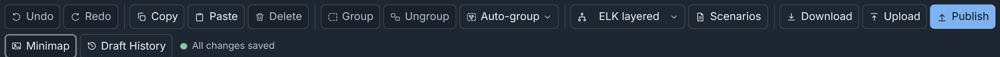
| Button | Function | More |
|---|---|---|
| Undo, Redo | Undo or redo the last change. After an undo, a notice says how many newer snapshots your next change removes. | Undo and redo, Newer snapshots |
| Copy, Paste | Copy the selection, or paste a copy of it. | Copy, paste, duplicate and delete |
| Delete | Delete the selected nodes and connections. | Copy, paste, duplicate and delete |
| Group, Ungroup | Put the selected nodes in a new group, or remove a selected group and keep its nodes. | Groups |
| Auto-group | A menu: By network, By name or By name pattern…. | Auto-group |
| Layout menu | Arrange the diagram. The menu shows the layout of the draft, or Default when no layout ran. | Layouts |
| Scenarios | Choose, view, edit or create the scenarios of the diagram, or store a scenario file on the server. | Scenarios |
| Download | Save the diagram as a file. | Downloading |
| Upload | Open a Builder document, a published diagram or a legacy Builder diagram as a new draft. | Import, Upload and Download |
| Publish | Write Topology and Experiment configs, and add the topology to the scenarios of the diagram. | Publishing |
| Exp | Open the experiment that you published the diagram with. It shows only while that experiment exists and your role can read it. | Opening the experiment |
| Minimap | Show or hide the minimap. | Canvas |
| Draft History | List the snapshots of the draft, and restore one. | Draft History |
The save state follows, for example "All changes saved". When a save fails, Retry saving follows it (see How drafts save).
A button that does not apply is unavailable, for example Ungroup while the selection holds no group. In a published diagram, the editing buttons are unavailable.
The tooltip of a button shows its keys. The keys in the tooltips of the layout menu and Auto-group run Auto layout and Auto-group by network without the menu.
Actions that take time¶
A button whose action can take time, such as Publish, shows a turning ring while the action runs. The button keeps its name, its size and focus. A second press does nothing. A dialog also says what it does, for example "Preparing PNG…". With reduced motion, the ring does not turn.
Canvas¶
- Select: click a node or a connection. Shift-click adds a node to the selection, or removes it. Click an empty spot to clear the selection.
- Move: drag a node. A drag of a group moves its nodes. With Snap to grid on in Settings, nodes go to the grid of the diagram (see Grid size in With nothing selected).
- Move with keys: Shift and an arrow key move the selected nodes 10 pixels, without the grid. Builder saves the move as one undo step when you release the key or focus leaves the canvas (see Arranging by hand).
- Pan: drag an empty spot.
- Zoom: use the mouse wheel, or Zoom in, Zoom out and Fit diagram to view at the bottom left. After a fit, the third button is Restore previous view.
- Connect: drag from the connection point of a device to a switch (see Connecting interfaces).
- Edit: double-click a node to open the Node Editor. A double-click on a line adds a bend.
A press is a click, not a drag, while the pointer stays within 4 screen pixels at any zoom, or 8 pixels with a finger or a pen. A click selects the node and does not move it. When Builder cannot accept a move, for example while a save conflict is open, the nodes return to their old positions.
A device shows its icon, hostname, Type, number of interfaces and description. An external device shows External, and a device with no type shows Device. A device from an included topology has a dashed border, and shows its source in place of its type (see Included topologies). A node with an issue has a mark at its top left corner (see Checks and warnings).
A switch shows its icon and the name of its network. Its outline has the color of its network connections, unless the switch has its own outline color or the color of its layer. An icon has the color of the outline of its node. A device with no outline color shows its icon in the accent color of the theme (see Colors).
The minimap at the bottom right shows the full diagram. To resize it, drag Resize minimap at its top left corner. Minimap in the toolbar shows or hides it until the next diagram opens.
With Show coordinates on in Settings, rulers show X and Y in canvas pixels, and a band shows the extent of the selected nodes. For a node in a group, Position starts at the top left corner of the group, so it does not agree with the rulers. PNG and SVG downloads do not show the rulers.
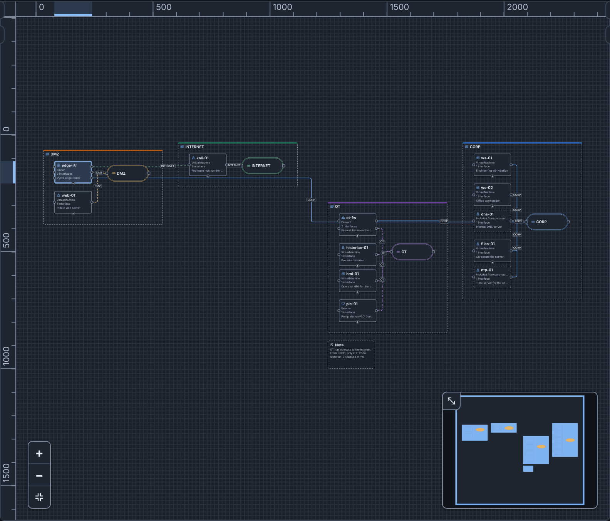
To hide the connections on your canvas only, see Hiding connections. For the canvas keys, see Keys on the canvas.
Reset view in the header does not change the diagram. It does these steps:
- It resets the zoom to Zoom when a diagram opens in Settings: 100%, the full diagram, or your custom percentage.
- It shows the minimap at its default size, unless Settings turn it off.
- It shows both side columns at their default widths.
- It closes the sections that you opened, such as More settings, and expands the sections that you collapsed (see Collapsing sections).
- It scrolls the columns to the top.
Info tooltips¶
Rest the pointer on a device or a switch, or move focus to it, to see its info tooltip:
| Node | Rows of the tooltip |
|---|---|
| Device | Description, cut to 80 characters. Interfaces: each interface with its address, for example "eth0 — 10.10.20.101/24", or "DHCP". OS type. |
| Switch | Network: the name of the network. VLAN alias, or "no alias". Description, cut to 80 characters. Connected devices, with their number: each device on this switch, with the address of its interface. |
A list shows its first 8 entries, then "+N more". An empty row says "None", and a device with no OS type says "Not set".
The tooltip stays while the pointer is on the node or the tooltip, and while the node has focus. While a node has focus, the pointer on another node shows the tooltip of that node. Esc closes the tooltip until focus moves, and keeps the selection. Screen readers read the same facts as the description of the node. Notes, groups, drawings and connections have no tooltip, and PNG and SVG downloads do not show it.
Side columns¶
Nodes & Templates is the left column, and the Inspector is the right column. Each column has two toggles:
- Widen Nodes & Templates and Widen Inspector make the column as wide as possible. Click the toggle again to restore the width.
- Hide Nodes & Templates and Hide Inspector fold the column into a narrow strip. The strip holds the toggle that shows the column.
To set a width, drag the splitter (Resize Nodes & Templates, Resize Inspector). Double-click it to restore the default width. A selection on the canvas shows a hidden Inspector. The browser keeps the widths and the hidden columns.
In a window narrower than about 900 pixels, or at a high browser zoom, the columns stack, and the page scrolls.
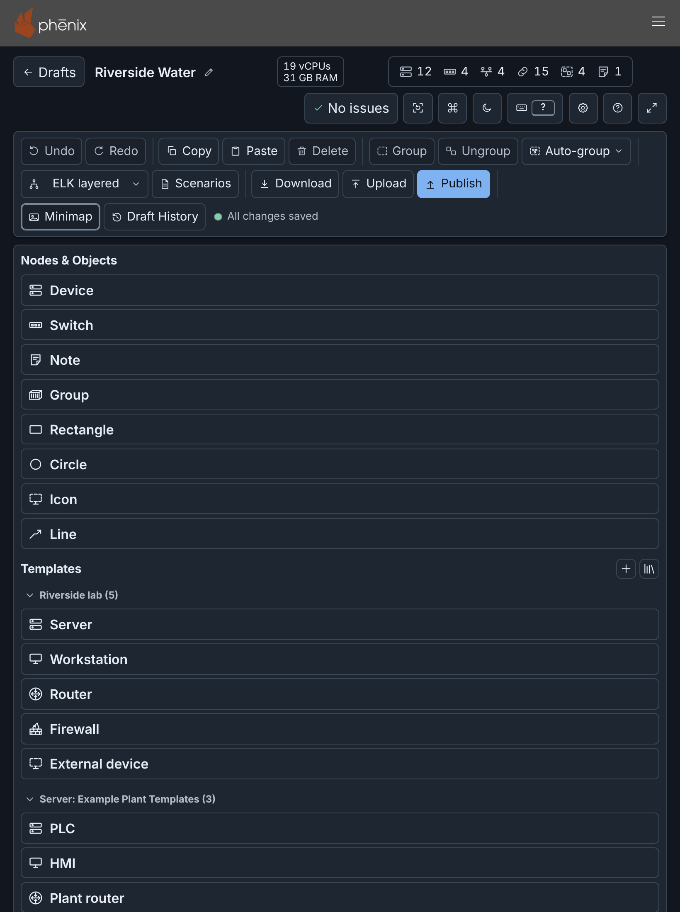
Nodes & Objects¶
Nodes & Objects lists Device, Switch, Note, Group, and the drawings Rectangle, Circle, Icon and Line (see Shapes, icons and lines). Under Templates, it lists the device templates in sections. Click an item to add it, or drag it onto the canvas. Builder puts the new node in free space and selects it. Point at an item to see its description. See Adding devices.
For the template sections, the template buttons and the updates of linked templates, see Templates in the editor and Linked templates.
To find a node, use Go to node in the command palette (type @). To find a network, use Go to network (type #). To rename a node, select it and press F2: focus goes to its name in the Inspector. Remove network in the command palette removes a network and its switches, also a network that no switch shows (see Adding switches and networks).
Inspector¶
The Inspector shows and changes the fields of one selected node or connection. With nothing selected, or with several items selected, it shows the diagram.
A text box for more than one line, such as Description, grows with its text to eight lines, then scrolls. To make it taller, drag its bottom right corner.
The Inspector header¶
When you select one node, the header names it, for example "Device edge-rtr". It has three buttons:
- Add connection: opens Add a connection, which connects a device to a switch without a drag (see Add a connection without dragging). It shows for a device or a switch, but not for a device from an included topology.
- Move to group: opens Move to a group, which puts the node in a group, or removes it from its group (see Groups).
- Open Node Editor (the pencil): opens the Node Editor.
Each dialog starts from the selection. The tooltip of each button shows its name and keys. Add connection and Move to group have no keys until you set some (see Customizing shortcuts). A published diagram shows only Open Node Editor.
Collapsing sections¶
A group of fields (such as General or Hardware), a list (such as Interfaces or Drives) and each list entry (such as "Interface 1: eth0") can collapse. Click its name to collapse or expand it. A collapsed entry keeps its buttons to move, insert and remove it.
- A collapsed part that holds a field with an error shows a cross after its name. Screen readers read "has errors".
- A collapsed section expands when you go to one of its fields, or when Apply or Save now stops because of an error in it.
- The sections stay collapsed for the next node until you leave the page. The Inspector, the Node Editor and the template editor each keep their own collapsed sections.
- Reset view expands all sections and entries.
- A search in the Node Editor expands the sections with a match until the search ends (see Searching the fields).
Point at the label of a field to see its help. For a field of the phenix spec,
the help starts with its topology YAML path, for example hardware.vcpus.
With nothing selected¶
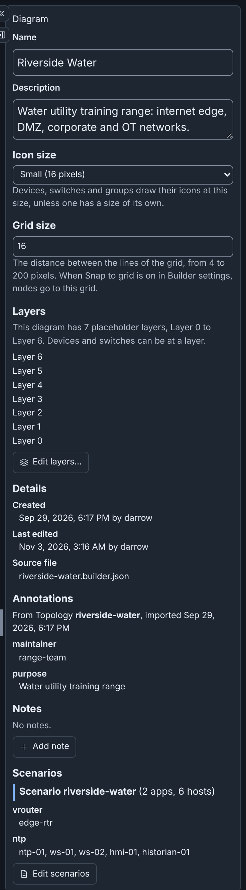
The Diagram section has these fields. A published diagram shows them as text.
- Name and Description. Click Apply to keep a change.
- Template updates: shows only when a linked template of the diagram needs attention. It has Update, Update all or Unlink, but no buttons in a published diagram (see Linked templates).
- Icon size: Small, Medium or Large (see Icon size). While your Node icon size setting is not Off, a note says that the setting overrides this size on your canvas. The diagram keeps its size.
- Grid size: the spacing of the canvas grid in pixels, 16 by default. Type a whole number from 4 to 200, then press Enter or leave the field. Other values show an error and change nothing. Nodes go to the grid only while Snap to grid is on in Settings.
- Layers: the list of layers, or a note that the diagram has the 7 placeholder layers (see Layers). For layers from a layer set, a line names the set and its version. When the set has a newer version, Update from layer set copies it into the diagram. Edit layers… opens the layers editor. A published diagram shows neither button.
-
Details, read only. A row shows only when the diagram has its value:
- Created: the time and the user that made the diagram.
- Last edited: when the server saved the content that you see, and by whom. After Undo or Restore, it shows the save of the earlier version.
- Source file: the file of an Upload, or the config file of an Import.
See Who made and last saved a diagram. - Annotations: for a draft imported from a config, the annotations of that config. You cannot change them, and publishing does not write them (see What an import keeps). - Notes: text about the full diagram, one box for each note. Add note adds a box. Builder saves a note when you leave its box. To remove a note, empty its box, or click its Delete button. Builder JSON and YAML keep the notes, but publishing writes them to no config. - Scenarios: "No scenarios." and Add scenario, or a sub-heading for each scenario, for example "Scenario riverside-water (2 apps, 6 hosts)". Edit scenarios opens the Scenarios dialog (see Scenarios).
A diagram holds at most 100 notes of at most 4096 bytes each, in UTF-8. At 100 notes, Add note is unavailable. Builder does not save a note that is too long, or that holds a control character other than a line break or a tab. It shows an error under the box.
The app count of a scenario includes the disabled apps, and a host counts one
time. A scenario with disabled apps adds their number, for example "1
disabled app". Under the sub-heading, each app shows its hosts. An app with
no hosts shows "(no hosts)", and a disabled app shows "(disabled)". To read
the apps, Builder needs configs get on the scenario. Without it, the
Inspector says that it cannot read them.
Editing a node¶
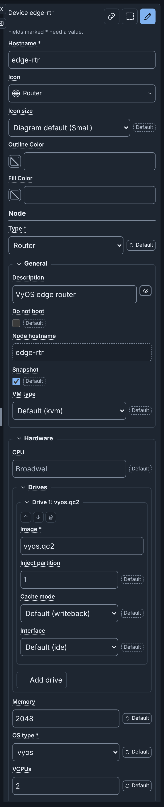
Select a node to see its fields. A device has these sections:
- Hostname, Icon, Icon size, Outline Color and Fill Color (see The Icon field, Colors and Icon size). While your Node icon size setting is not Off, Icon size has a note that the setting overrides it on your canvas.
- Node: the fields of the phenix spec of the node. These are Type, and General (Description, Do not boot, Node hostname, Snapshot, VM type).
- Hardware: CPU, Drives (Image and more for each drive), Memory, OS type and VCPUs.
- Network: Interfaces, OSPF, Routes and Firewall rulesets.
- More settings, a bar that you click to open: miniccc commands, Delay, Injections, Advanced settings, Labels and Annotations.
- Layer: the layer of the device (see Layers). A device with no chosen layer can be at the layer that its fields match. Use matched layer removes the chosen layer. Edit layers… opens the layers editor.
- Connection points: the interfaces of the device, each with a connection point on the canvas.
- Position: X and Y, and Move.
A field marked * must have a value. An empty optional field shows the value that phenix uses, for example "Default (kvm)" for VM type. A field that holds a value other than its default shows a Default button. Default empties an optional field, or gives a required field its default value. Click Apply to keep the change.
Some fields do not accept all values:
- A list of choices with a value that is not a choice, as in an uploaded topology, shows that value with "(not one of the choices)" and a warning.
- A number field shows an error for text that is not a number. A field for a whole number also shows an error for a number such as 1.5 or 1e3.
- Memory and VCPUs can hold template text, such as
{{ .Memory }}, until you type a number.
To change fields:
- Change one or more fields. A bar at the bottom shows "Unapplied changes", with Apply and Cancel.
- Click Apply, or press Enter in a field. Builder changes the diagram and saves it.
Cancel discards the changes. While a changed field has an error, Apply is unavailable. When the diagram changes while you edit, the Inspector keeps your unapplied changes.
When you select another node, the Inspector applies valid changes and discards changes that are not valid. Builder also saves unapplied changes when you leave, publish or download the draft (see Automatic snapshots).
These changes take effect at once, without Apply:
- The fields in Fields that take effect at once.
- Layer.
- Show description on the canvas (see Hiding descriptions on the canvas).
- An addition, disconnection or removal of a connection point.
The fields come from the phenix server. When the server cannot send them, the Inspector says so, and shows the fields built into Builder. These may differ from what this server accepts (see Permissions).
Other kinds of nodes¶
- A switch is one network. Its Inspector ("Network CORP") has Name, VLAN alias, Subnet, Gateway, Description, Edge Color, Line style, Outline Color, Fill Color, Icon size, Layer, Addresses and Position (see Adding switches and networks and Addresses of a network). Layer takes effect at once, as on a device.
- A note has Text, Color and Position (see Notes).
- A group has Title, Description, Color, Border pattern, Icon, Icon size and Position (see Groups).
- A connection has Label (by default, the name of the network), Color and Line style. Its Inspector names it, for example "Connection from ntp-01 (eth0) to CORP".
- A rectangle or a circle has Shape, Label, Fill Color, Outline Color, Border pattern, Width and Height.
- An icon has Icon, Label, Width and Height.
- A line has Label, Color, Line style, Arrowhead at the start, Arrowhead at the end and Points, with X and Y for each point (see Shapes, icons and lines).
Addresses of a network¶
The Inspector of a switch has these fields for the addresses of its network. Publishing does not write them to the topology.
- Subnet: the IPv4 network, for example
10.10.20.0/24. - Gateway: the IPv4 address of the router on the network. It must be in the subnet.
Assign addresses, under Addresses, gives each static interface on the network that has no address the next free address of the subnet. The change is one step of Undo, for example "Assigned 3 addresses on network CORP". The button uses the applied Subnet. When the network has no subnet, the button is unavailable. Assign addresses in the command palette does the same for a network that you choose.
For how Builder gives addresses and gateways, and what it announces, see Subnets and addresses.
Fields that take effect at once¶
These fields change how a node or a connection looks:
| Where | Fields that take effect at once |
|---|---|
| Device | Icon, Icon size, Outline Color, Fill Color |
| Switch | Edge Color, Line style, Outline Color, Fill Color, Icon size |
| Group | Color, Border pattern, Icon, Icon size |
| Note | Color |
| Rectangle or circle | Fill Color, Outline Color, Border pattern |
| Icon | Icon |
| Line | Label, Color, Line style |
| Connection | Label, Color, Line style |
Each change is one step of Undo, for example "Changed the fill color of Device web-01 to #2f6fbf". A text field, such as Label, takes effect when you press Enter or move focus out of the field. Before that, Esc restores the text that the field had. In the template editor, these fields change the template at once, and Save saves the template.
Hiding descriptions on the canvas¶
A device and a group show their Description on the canvas. To hide it for one node, click the eye button (Show description on the canvas) beside Description. The button is on while the canvas shows the description. The change takes effect at once, and is one step of Undo, for example "Hid the description of Device web-01 on the canvas". The template editor and the Node Editor have the same button. The diagram keeps the choice.
The node keeps its description, and the info tooltip still shows it. PNG, SVG and draw.io downloads do not show it. Publish and the checks do not change.
To hide the descriptions of all nodes on your canvas, disable Show node descriptions in Settings, or choose Hide node descriptions in the command palette. While the setting is off, each Description field says "Your canvas shows no descriptions, because your Show node descriptions setting is off."
The Icon field¶
Icon shows the icon of the node and its name. To change the icon:
- Click Icon, or move focus to it and press ↓. The list of built-in icons opens, with focus on the icon in use.
- Select an icon. To go to an icon, type its first letter.
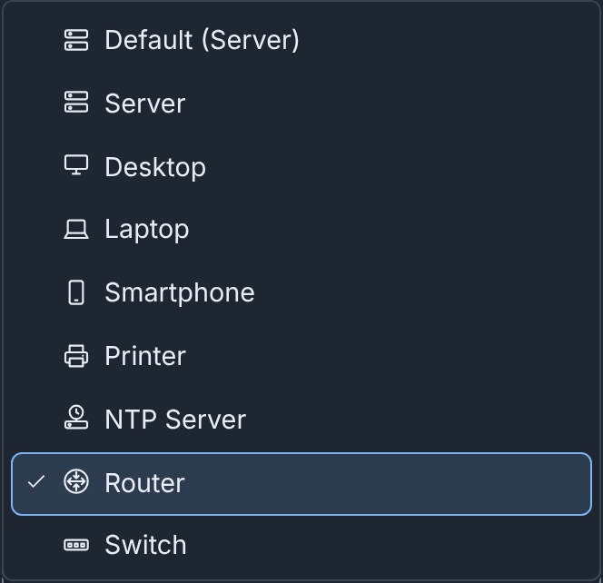
Default, at the start of the list, is the icon of the node when it has no icon of its own. An icon drawing has no Default. At the end of the list, Custom icon… opens the Custom icons dialog (see Custom icons). In a published diagram, the list does not open.
Fields you cannot change¶
- A device from an included topology is read only, and the Inspector says so. You can still move it. Combine into a new draft makes a copy of the diagram in which the included devices are its own (see Making included devices editable).
- You cannot rename a network that an included device is on. Its other fields can change.
- All fields are read only in a published diagram (see Published diagrams).
Node Editor¶
The Node Editor shows the fields of one node in a large dialog, in columns. To open it, do one of these steps:
- Select the node, then click Open Node Editor in the Inspector header.
- Double-click the node on the canvas.
- Select the node, or move focus to it on the canvas. Then press ⌥+⇧+E on macOS, or Alt+Shift+E on Windows and Linux.
- In the command palette, select Open Node Editor. With no single node selected, the palette asks for a device or a switch.
The Node Editor has the fields that the Inspector shows, and the checks of the node. Edit layers… opens the layers editor over the Node Editor, which keeps your changes. The first field has focus.
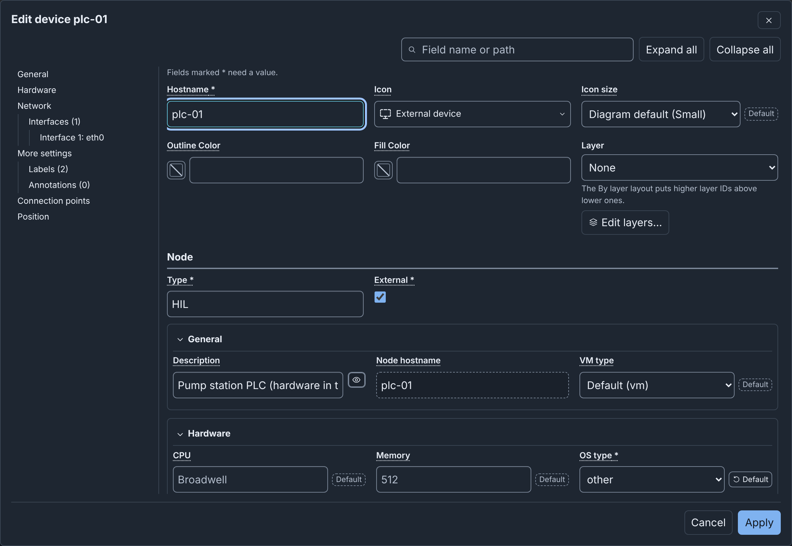
Sections and the table of contents¶
The Node Editor has these tools. Expand all, Collapse all and the table of contents show only for a device.
- Search fields shows only the fields that match (see Searching the fields).
- Expand all and Collapse all expand or collapse all sections and entries (see Collapsing sections).
- The table of contents lists the sections, their lists and entries, Connection points, Position, and Checks when the node has issues. A list shows its number of entries. An entry with a field error shows a cross. Click an entry to expand it, scroll to it and move focus to it. The table of contents marks the entry in view. During a search, it lists only the parts that the search shows.
- In a window narrower than 900 pixels, click Table of contents to show it above the fields. A choice in it closes it again.
The section headers stay at the top while you scroll.
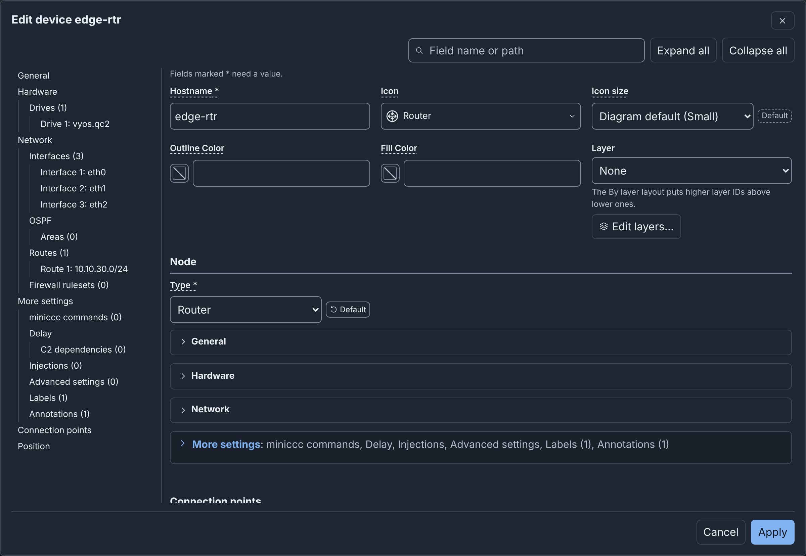
Searching the fields¶
Search fields finds a field by its label, such as memory, or by its path
in the topology YAML, such as network.interfaces[0].vlan. A part of a path
also matches, for example interfaces.vlan. The search ignores letter case
and field values. With two or more words, each word must match.
- Only the matching fields show, and their sections expand. A section, list or entry whose name matches shows all its fields.
- A line under the box counts the matches.
- To show all fields again, empty the box, or press Esc in it. When the box is empty, Esc closes the Node Editor.
- When Apply stops because of errors, the search empties. The sections stay expanded, so you can see the fields with errors.
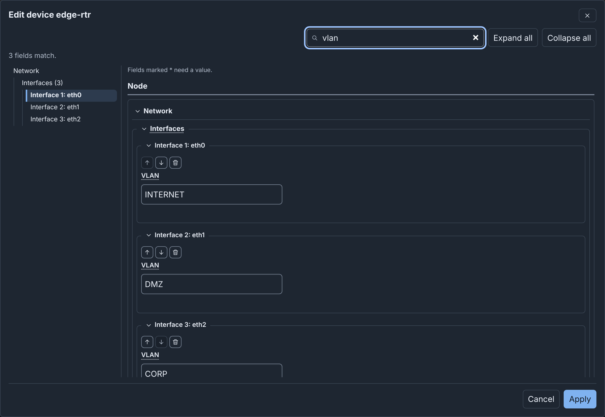
To edit a node in the Node Editor:
- Change one or more fields.
- Click Apply. Builder applies all changes as one step of Undo, closes the Node Editor and moves focus to the node on the canvas.
Cancel, Esc and Close dialog close the Node Editor. If you did not apply your changes, Builder asks you to discard them or keep editing.
The changes that take effect at once in the Inspector also do so here: Fields that take effect at once, Layer, Connection points and Move. Cancel does not discard them. Use Undo.
Before the Node Editor opens, the Inspector applies its unapplied changes. If one of them has an error, the Node Editor does not open. When you leave or reload the draft, Builder applies and saves the unapplied changes of the Node Editor.
In a published diagram, the Node Editor is read only and has only Close. The fields of a device from an included topology are also read only.
Settings¶
To open Builder settings, click Settings in the header, or press ⌥+⇧+S on macOS or Alt+Shift+S on Windows and Linux. This works in the editor and on the drafts page. Changes apply at once, and the browser keeps them after you log out. They do not change the diagram.
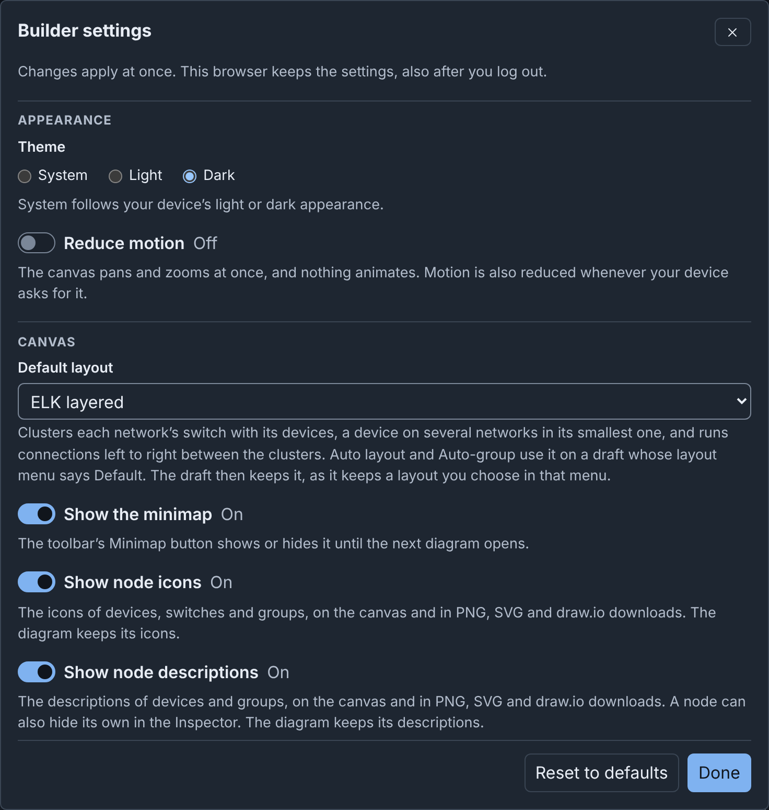
| Group | Setting | Default | Function |
|---|---|---|---|
| Appearance | Theme | System | System, Light or Dark (see Themes). |
| Appearance | Reduce motion | Off | The canvas pans and zooms at once, and nothing moves. Motion is also reduced when your device asks for it. |
| Canvas | Default layout | ELK layered | The layout that Auto layout and Auto-group use on a draft whose layout menu says Default. The draft then keeps it. A change moves no node (see Layouts). |
| Canvas | Show the minimap | On | Shows the minimap when a diagram opens. |
| Canvas | Show node icons | On | Shows the icons of devices, switches and groups on the canvas and in PNG, SVG and draw.io downloads. |
| Canvas | Show node descriptions | On | Shows the descriptions of devices and groups on the canvas and in PNG, SVG and draw.io downloads (see Hiding descriptions on the canvas). |
| Canvas | Show connections | On | Shows the connections on your canvas (see Hiding connections). |
| Canvas | Node icon size | Off | Off uses the icon sizes of the diagram. Small, Medium or Large replaces them on your canvas and in your PNG, SVG and draw.io downloads. Other users see the sizes of the diagram. |
| Canvas | Show coordinates | Off | Shows X and Y rulers on the canvas (see Canvas). |
| Canvas | Zoom when a diagram opens | 100% | 100%, Fit the whole diagram in view, or Custom with a percentage from 20 to 200. Builder rounds it to a multiple of 5. A number out of range shows an error. Reset view also uses this zoom. |
| Editing | Snap to grid | Off | Nodes that you drag or drop, new nodes and the points of lines go to the grid of the diagram. See Grid size in With nothing selected. |
| Editing | Assign addresses on connect | On | A static interface with no address that you connect, paste or duplicate gets the next free address of the subnet (see Addresses of a network). |
| Keyboard | Single-key shortcuts | On | See Single-key shortcuts. |
| Keyboard | Change keyboard shortcuts | See Customizing shortcuts. | |
| Layers | Edit layers… | In the editor, opens the layers editor. On the drafts page, shows the Layers tab (see The drafts page). The layers of a diagram are not a setting. | |
| Storage | Clean up… | Deletes the published, unchanged drafts of all users, and the stored data that nothing uses (see Cleaning up storage). |
Commands of the same names in the command palette change Show node icons, Show node descriptions, Show connections, Node icon size and Snap to grid.
Clean up… shows what it would delete, and asks before it deletes:
- It first saves the open draft.
- It deletes nothing when that save fails.
- It deletes nothing when a draft that it would delete has changes on this device that the server does not have.
- If it deletes the open draft, Builder does not save your next change. To keep a copy, click Download first.
Reset to defaults resets all settings, but not the layers of a diagram, the default layer set or your shortcut keys.
Layers editor¶
The layers editor, Layers of this diagram, changes the layers of the open diagram. To open it, select Edit layers… in one of these places:
- The Inspector, under Layers with nothing selected, or beside the Layer of a device or a switch.
- The Node Editor, beside Layer. The layers editor opens over the Node Editor, which keeps your unapplied changes.
- Builder settings.
- The command palette.
Each change is one step of Undo. A diagram with the placeholder layers saves them with your first change. In a published diagram, the layers editor is read only. For its parts, see Editing the layers.
Focus mode¶
Focus mode hides the phenix navigation bar, so Builder fills the window. Click Focus mode in the header, or press ⇧+⌘+F (Ctrl+Shift+F). To end it, click Exit focus mode or press the same keys.
Focus mode also asks the browser for full screen:
- If the browser refuses full screen, focus mode fills the window only.
- When you leave full screen from the browser, focus mode stays on in the window.
- Focus mode stays on between the drafts page and the editor.
- Focus mode ends when you use its button or its keys, or leave Builder. Ending focus mode also leaves full screen.
Themes¶
The theme button in the header shows the theme in use: System, Light or Dark. System follows the light or dark appearance of your device. Each press selects the next theme. On a device with a light appearance, the order is System, Dark, Light. On a dark one, it is System, Light, Dark. Theme in Settings sets the same choice.
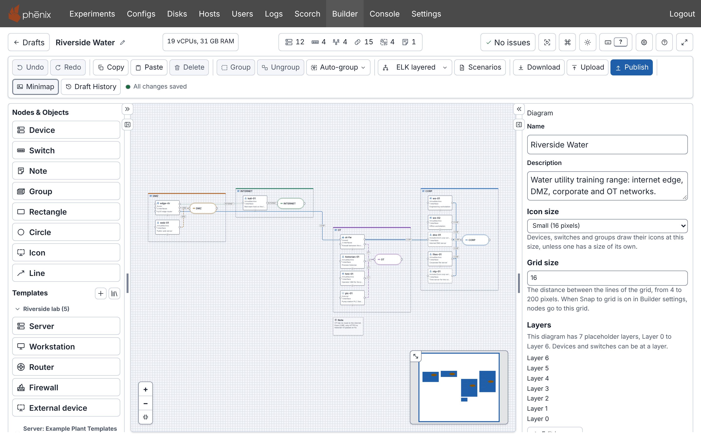
The theme changes only Builder, not the rest of phenix. PNG and SVG downloads use the background of the theme in use. A draw.io download always has the colors of the light theme.
Accessibility¶
You can use Builder with only a keyboard, and with a screen reader.
- From the top of the page, press Tab to reach Skip to diagram canvas.
- The diagram, the toolbar and the header counts are each one Tab stop (see Keys on the canvas). The arrow keys, Home and End move between the toolbar buttons. With a screen reader, use its focus mode (forms mode in JAWS) for the canvas keys.
- A custom icon is decoration. It does not change the screen reader text of a node.
- To add and connect nodes without a pointer, use Nodes & Objects and
the Inspector header. In the command palette, type
connectorgroupto open the same dialogs. To find a node, use Go to node. Esc closes a dialog and returns focus to where you opened it. - Builder announces the result of each change, for example "Updated device ws-01.", and each setting change from the command palette.
- A field that suggests values, such as the Image of a drive, announces the number of matching suggestions.
- An open dialog announces what its changes did. Builder announces the other messages when the dialog closes.
Builder aims to meet WCAG 2.2 level AA.